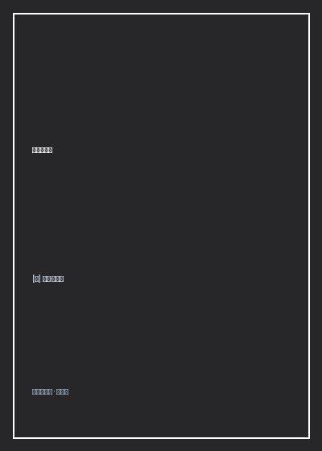

《幸福的建筑》

总体观点
建筑远不只是遮风挡雨的物理构筑物，它更是一种能够深刻塑造我们情绪、心境与价值追求的‘精神容器’。德波顿指出：我们之所以在某些建筑物里感到平静、优雅或崇高，而在另一些空间里感到局促、压抑或暴躁，是因为建筑以静默无声的几何比例、材质质感与采光角度，时刻向我们心灵灌注着某种‘关于良善生活的暗示’。我们寻找美丽的建筑，本质上是在寻找我们自身渴望拥有却时常缺失的优良品质。
建筑的形式演化折射了人类对幸福定义的历史变迁。从古典主义对对称、秩序与理性的偏执推崇，到哥特式大教堂以耸立穹顶对彼岸天国的狂热向往；再到现代主义勒·柯布西耶将住宅定义为‘居住的机器’，试图用光照、绿地与混凝土清除资产阶级的浮华装饰。建筑风格的激烈争吵，本质上是不同时代人们对‘人应当如何过一种有价值的生活’的伦理哲学论辩。
理想的建筑应当在相互冲突的美学力量之间实现精妙的平衡与和解。德波顿提炼出衡量建筑之美的五大核心法则：秩序（克服混乱）、典雅（举重若轻）、连贯（内外有机统一）、自知之明（诚实呈现功能与材料）以及生命力（容纳岁月的风霜与人性的温度）。在浮躁喧嚣的现代世界，好的建筑如同一位智慧的沉默友人，帮助我们重新找回内心的安宁与自尊。
核心观点
-
1. 建筑作为心理暗示的无声扩音器
墙壁、天花板与地面的色彩和比例，时刻在潜移默化中向我们传递关于‘我们是谁’的心理催眠。一间阴暗低矮、堆满廉价塑料杂物的房间，会不断放大我们潜意识里的贫乏与焦虑感；而一间高挑明亮、微风穿堂的木质居室，则能抚平躁郁、唤醒高贵沉静的心智。
德波顿漫步于威尼斯圣马可广场与伦敦威斯敏斯特大教堂：仰望石柱拱券在几十米高空交汇出的神圣阴影，信徒与无神论者都在那一瞬间体会到个体在永恒宇宙面前的谦卑与释怀。 -
2. 古典对称背后的焦虑防御机制
文艺复兴建筑大师帕拉第奥之所以在圆厅别墅中严格推行四面对称、毫无瑕疵的黄金几何轴线，是因为那个时代充斥着黑死病、战争与无常变故。人类试图用石头构筑起绝对理性、永恒不变的数学秩序，作为抵御现实世界残酷混乱的心灵堡垒。
分析帕拉第奥式建筑中连窗棂宽度与罗马多立克柱间距都必须经过严密调和平均数推导的细节，展现理性几何对脆弱人类心灵的治愈慰藉。 -
3. 柯布西耶萨伏伊别墅的机器美学乌托邦
现代主义先驱勒·柯布西耶打破传统繁琐的砖石承重墙，用底层独立支柱、自由立面、水平长窗与屋顶花园，建造出如白色远洋邮轮般纯粹的萨伏伊别墅。他试图用工业化预制构件将阳光、空气与卫生带给大众，洗涤旧世界的沉沦腐朽。
然而德波顿辛辣指出其乌托邦背后的尴尬现实：由于屋顶平顶设计防水缺陷，萨伏伊夫人在入住第一个雨季便遭遇全屋漏水、儿子患上严重肺炎，警示功能主义极端口号对真实肉身舒适度的冷酷傲慢。 -
4. 建筑的诚实：自知之明与材料尊严
最恶俗平庸的建筑往往热衷于‘伪装与虚荣’：用劣质石膏刷上金漆伪装凡尔赛大理石，在现代公寓门口生硬焊上两根毫无受力功能的罗马假柱。真正有魅力的建筑懂得‘坦然做自己’，让未经粉饰的清水混凝土、粗粝红砖或质朴橡木自信展现其真实的肌理与结疤。
日本大师安藤忠雄的光之教堂：没有任何繁复的金箔浮雕，仅凭两堵朴素的清水混凝土墙壁在尽头切出一道十字形透光空隙，阳光倾泻而下，简陋粗粝的混凝土焕发出超越钻石的崇高神性。 -
5. 随风而逝的岁月痕迹与风化之美
建筑不应被视为一成不变的冰冷博物馆展品，它必须有尊严地容纳时间的流逝。石灰石的微小剥落、木地板被千百双脚磨出的温润光泽、铜质门把手氧化后的翠绿铜锈，都是建筑物与居住者共同经历沧桑岁月的生活包浆与生命勋章。
对比现代光鲜刺眼但一年后便斑驳开裂的玻璃幕墙大厦，与牛津大学历经六百年风雨侵蚀、覆满常春藤依然温润优雅的黄石中庭，深刻揭示自然风化融入时间后的崇高诗意。
全书思维导图 · 知识脉络树
全书结构
-
第1章 建筑的意义：空间对心灵的塑造
奠定全书哲学命题，探讨为什么人类如此极度在乎居所的美丑，解析环境建筑如何作为一种无声语言影响我们的思考、道德与情感。
从麦当劳快餐店刺眼的塑料桌椅灯光与修道院昏暗石室的氛围对比出发，剖析空间几何对食欲、焦虑与反思心境的直接物理操控。 -
第2章 我们应当住在什么样的风格里？
梳理19世纪欧洲‘风格混战’（希腊复兴、哥特复兴、洛可可与伊斯兰风格并存的荒诞拼贴），反思风格相对主义背后的信念迷失。
描写19世纪英国维多利亚时代的富商公馆：在同一个庭院里既有诺曼式碉堡塔楼，又有威尼斯哥特尖窗与中式凉亭，展现了暴发户品味的迷茫。 -
第3章 建筑的语言与象征
深入建筑的符号学与形式心理学，解析一根柱子、一扇窗框与一道转角如何像词汇一样传递力量、温柔、威严或傲慢的情感语义。
细致对比多立克柱式的粗壮刚毅（如武士的躯干）与爱奥尼克柱式的卷草舒展（如仕女的发辫），展示石材结构中拟人化的情感寄托。 -
第4章 建筑的理想：秩序与复杂性平衡
剖析优秀建筑的核心美学法则：在避免单调死板的秩序与避免嘈杂混乱的复杂性之间，寻找黄金平衡点，并探讨自知之明法则。
以荷兰阿姆斯特丹运河两岸连续排列的十七世纪山墙砖房为例，解析其在保持统一高度宽度秩序的同时展现无穷山墙细节趣味的典范。 -
第5章 土地的守护神与大地景致的和解
探讨建筑与周围自然地理环境的共生关系，批判现代推土机式粗暴平整山水的大兴土木，倡导顺应山川水势的谦卑营造哲学。
记录弗兰克·劳埃德·赖特的流水别墅：建筑挑台从天然瀑布岩层上凌空飞出，混凝土与溪谷巨石浑然一体，仿佛由大地自然生长而出。 -
第6章 田原的承诺：构建幸福生活的避难所
总结全书，将建筑美学回归至日常人生的救赎，倡导以包容、温情与人文关怀重构我们的城市与家园，让居所成为精神的温柔故乡。
描绘黄昏时分归家推开厚重木门、点亮暖黄台灯的平凡瞬间，感悟真正的幸福建筑在于给漂泊的人类灵魂提供恒久的庇护所。